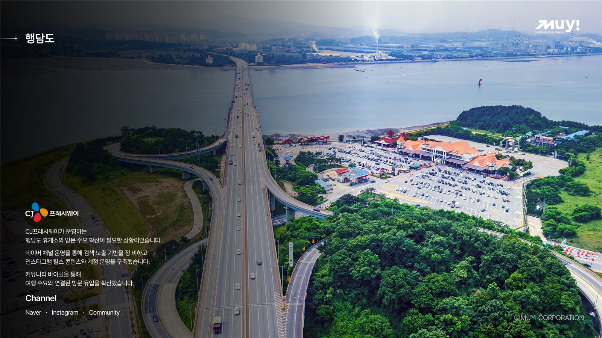
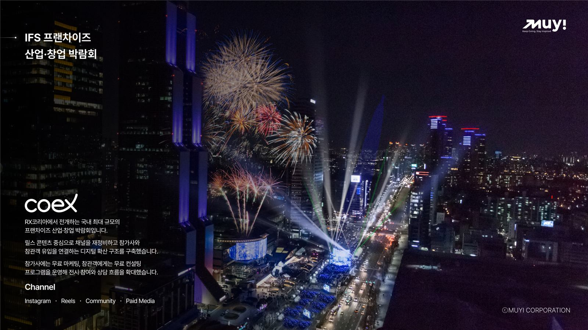
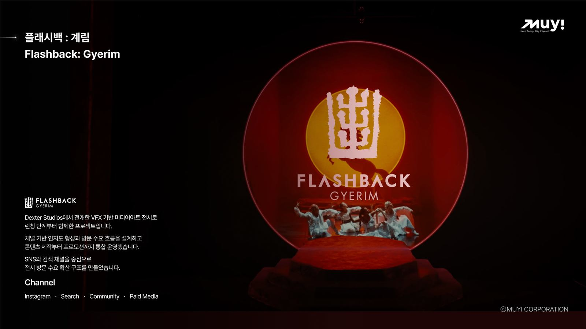

조회수 말고
방문을 만드는 숏폼
MUYI(주식회사 무이코퍼레이션)는 음식점·카페·미용실·뷰티샵 등 오프라인 매장을 위한 숏폼 마케팅 회사입니다. 검색 키워드 데이터로 숏폼을 기획하고, 영상 촬영 브랜드 무이 스튜디오(MUYI studio)가 직접 촬영·편집하며, 네이버 플레이스까지 연결해 영상을 본 사람이 실제로 가게를 찾아오게 만듭니다.
영상만 만드는 곳과
무엇이 다른가
음식점 숏폼의 목표는 조회수가 아니라 방문입니다. 영상을 본 손님은 지도와 검색으로 가게를 찾습니다. 그 연결이 끊기면 조회수는 그대로 사라집니다.
일반 숏폼 제작
- 유행하는 포맷으로 영상 납품
- 조회수·좋아요로 성과 보고
- 영상과 검색·지도 노출이 따로 놂
- 업로드 이후 관리 없음
MUYI 숏폼 마케팅
- 지역 검색 키워드 데이터로 기획
- 매장명·지역 키워드를 영상에 설계
- 네이버 플레이스 사진·리뷰·메뉴 동시 정비
- 문의·방문 흐름 기준으로 운영 점검
기획부터 방문까지 한 팀
기획·촬영·운영·플레이스를 외주로 쪼개지 않습니다. 한 팀이 같은 목표로 움직입니다.
검색 수요 조사
우리 동네에서 손님이 실제로 검색하는 키워드와 경쟁 매장을 데이터로 확인합니다.
숏폼 기획
메뉴의 차별 포인트, 첫 3초 후킹, 매장명·지역 키워드가 들어간 구성안을 만듭니다.
촬영·편집
무이 스튜디오가 매장을 방문해 촬영하고 릴스·쇼츠·틱톡 세로형(9:16) 규격으로 편집합니다.
운영·플레이스 연결
업로드와 광고 집행, 네이버 플레이스 정비를 함께 진행하고 문의·방문 흐름을 점검합니다.
릴스·쇼츠·틱톡,
플랫폼마다 다르게 만듭니다
숏폼, 숏츠, 쇼츠, 릴스는 모두 1분 안팎의 세로형(9:16) 영상을 부르는 이름입니다. 같은 촬영본이라도 플랫폼마다 첫 장면, 길이, 자막, 해시태그를 다르게 편집합니다.
인스타그램 릴스
동네 손님이 가장 많이 보는 채널입니다. 위치 태그와 지역 해시태그로 반경 안의 손님에게 노출하고, 저장·공유를 부르는 메뉴 클로즈업 중심으로 만듭니다.
유튜브 쇼츠(숏츠)
검색에 오래 남는 채널입니다. 제목과 설명에 매장명·지역 키워드를 넣어 "지역+메뉴" 검색에서 계속 노출되도록 만듭니다.
틱톡
확산 속도가 가장 빠른 채널입니다. 트렌드 음원과 빠른 컷 편집으로 첫 노출을 키우고, 신메뉴·이벤트 알리기에 씁니다.
무이 스튜디오가
직접 촬영한 매장 300건+
무이 스튜디오(MUYI studio)는 무이코퍼레이션의 영상 촬영 브랜드입니다. 외주 없이 직접 매장에 가서 찍습니다.
프랜차이즈
- 심돈
- 꽃돼지식당
- 압구정화로구이
- 요미우돈교자
- 동경생포차
- 명륜진사갈비
- 청년감자탕
- 복호두
- 조선부뚜막
- 소플러스
- 목구멍
- 지즐미육회관
- 돼지공방
- 신사꽃게당
- 춘타운
고기·구이
- 함바 소갈비
- 한우로 당당하게
- 야키니쿠 도쿠센
- 헤비스테이크
- 오목집
- 왕탄소갈비
- 육식회사
- 일품돈
- 후프바베큐
- 낭만짚불구이
- 오로라바베큐
- 은비갈비
한식·국밥·면
- 명월회관
- 해운대오복돼지국밥
- 본가부대찌개
- 까막골막국수
- 금강막국수
- 노형삼대국수
- 황가추어탕
- 동양백반
- 솔솥
- 여주솥반
해산물
- 신대륙횟집
- 여자수산
- 숙성회한판
- 영덕대게횟집
- 청초옥
- 해상공원횟집
일식·양식·버거
- 미즈장승진 일식
- 난바우동&이자카야
- 비스트로 훈
- 라헬의부엌
- 크레이지윙스앤버거
- 비치버거
- 야키토리텐진
카페·디저트
- 속초카페 달달공장
- 커피하우스178
- BCBL coffee roasters
- 울댕카페 파쏘
- 청자다방
- 파이인더샵
- 설원다식
- 눈꽃을 나누다
- 상록수 베이커리 파크
주점
- 반듯한잔
- 한식주점 사색
- 켄터키양조장
- 오징어데이
- 아롱포차
대표 매장만 추렸습니다. 프랜차이즈 지점 포함 촬영 300건 이상.
숏폼으로 방문을 만든 프로젝트
전체 사례는 마케팅 사례 페이지에서 볼 수 있습니다.

행담도 휴게소 방문 수요 확산
네이버 채널로 검색 노출 기반을 정비하고 인스타그램 릴스 콘텐츠와 계정 운영을 구축해 방문 유입을 늘렸습니다.

IFS 프랜차이즈 창업 박람회
릴스 콘텐츠 중심으로 채널을 재정비하고 참가사와 참관객 유입을 연결하는 디지털 확산 구조를 만들었습니다.

플래시백: 계림 런칭 운영
콘텐츠 제작부터 프로모션까지 통합 운영해 SNS·검색 채널 중심으로 전시 방문 수요를 확산했습니다.
이런 매장의 숏폼을 만듭니다
- 음식점·식당
- 포차·주점
- 카페·디저트
- 다지점 외식 프랜차이즈
- 미용실·네일
- 뷰티샵·피부관리
- 펜션·숙박
- 병의원
- 박람회·축제·전시
숏폼 마케팅 자주 묻는 질문
음식점은 영상을 본 사람이 지도와 검색으로 가게를 찾아 방문해야 매출이 됩니다. 그래서 영상 제작만 하는 곳보다 숏폼 기획·촬영과 네이버 플레이스·검색 노출을 함께 다루는 곳이 유리합니다. MUYI는 검색 키워드 데이터로 숏폼을 기획하고, 영상 촬영 브랜드 무이 스튜디오(MUYI studio)가 직접 촬영하며, 플레이스까지 연결해 운영합니다.
모두 1분 안팎의 세로형(9:16) 짧은 영상을 말합니다. 인스타그램에서는 릴스, 유튜브에서는 쇼츠(숏츠라고도 부름), 틱톡에서는 틱톡 영상이라고 부르고, 이를 통틀어 숏폼이라고 합니다. MUYI는 한 번 촬영한 소스를 플랫폼별 규격과 특성에 맞게 따로 편집해 올립니다.
네. 무이코퍼레이션 영상 촬영 브랜드 무이 스튜디오(MUYI studio)가 직접 매장에 방문해 촬영하고 편집합니다. 외주 촬영팀에 넘기지 않습니다. 방문 지역과 촬영 일정은 상담 시 안내합니다. 사장님이 이미 찍어둔 영상이 있다면 그 소스를 활용해 기획·편집만 진행할 수도 있습니다.
제작 편수, 촬영 여부, 운영·광고 범위에 따라 달라 무료 매장 진단 후 범위별로 안내합니다. 숏폼 광고비는 매체에 직접 집행되는 금액 기준으로 대부분 월 10만 원대부터 시작할 수 있습니다.
조회수만으로는 매출이 되지 않습니다. MUYI는 영상에 지역 키워드와 매장명을 넣어 검색으로 이어지게 하고, 검색했을 때 보이는 네이버 플레이스의 사진·리뷰·메뉴 정보를 함께 정비해 방문 전환까지 설계합니다.
가능합니다. 카페·디저트·주점 등 외식업 전반과 미용실·네일·뷰티샵, 펜션·숙박, 병의원, 박람회·축제·전시 같은 행사까지 숏폼을 기획·운영합니다.
상담과 진단은 전국 어디서나 전화·화상으로 가능합니다. 방문 촬영이 필요한 경우 지역과 일정을 상담 시 함께 조율합니다.